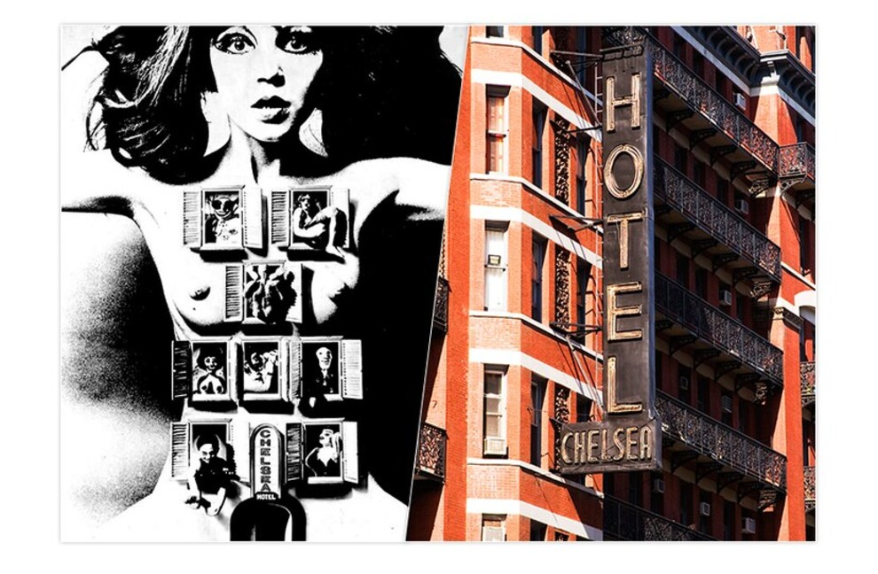
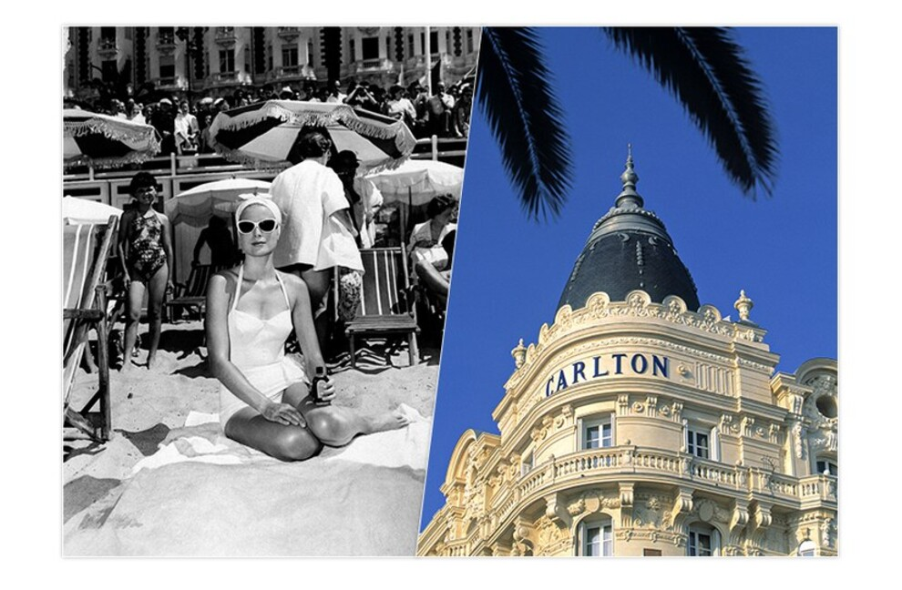
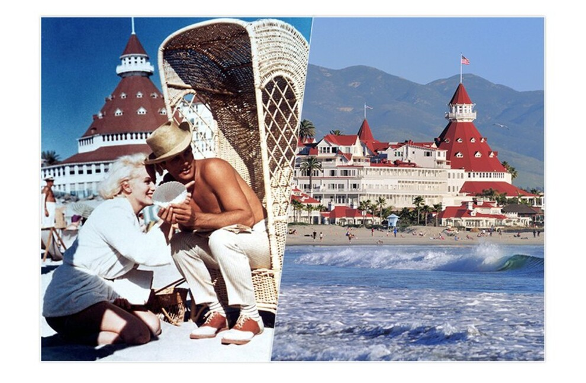
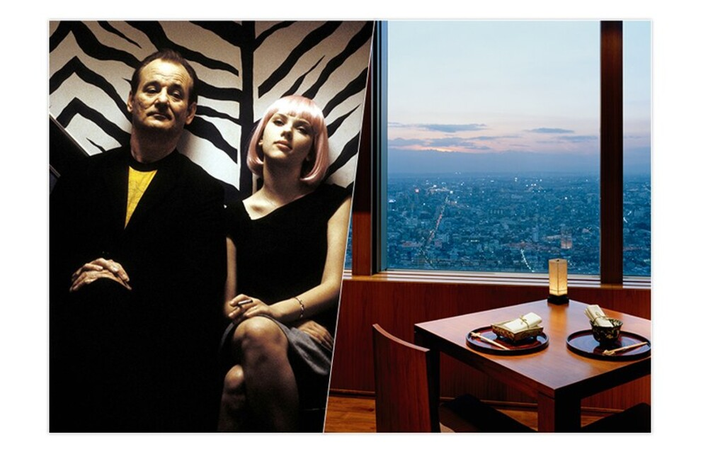

Lifestyle
Chelsea
Description
Отель Chelsea долгое время был домом и творческим пристанищем для таких известных людей, как Чарльз
Буковски, Дженис Джоплин и Энди Уорхолл, которые в этом отеле в 1966 году снимали свой
экспериментальный
фильм«Девушки из Челси». Благодаря технологии разделения экрана, которая позволяла сюжету
разворачиваться не
только в черном-белом, но и в цветном исполнении одновременно, фильм стал первым коммерческим
успехом
режиссера Энди Уорхолла. Под звучание саундтрека от The Velvet Underground фильм погружает нас в
художественную сцену 1960-х годов среди улиц Нью-Йорка.

Photodiary
Carlton
Отель Chelsea долгое время был домом и творческим пристанищем для таких известных людей, как Чарльз
Буковски, Дженис Джоплин и Энди Уорхолл, которые в этом отеле в 1966 году снимали свой
экспериментальный
фильм«Девушки из Челси». Благодаря технологии разделения экрана, которая позволяла сюжету
разворачиваться не
только в черном-белом, но и в цветном исполнении одновременно, фильм стал первым коммерческим
успехом
режиссера Энди Уорхолла. Под звучание саундтрека от The Velvet Underground фильм погружает нас в
художественную сцену 1960-х годов среди улиц Нью-Йорка.

Music
Hotel del Coronado
Hotel del Coronado стал известным благодаря легендарной комедии «В джазе только девушки». Все самые
смешные
сцены из фильма со звездным гламурным составом – Тони Кертисом, Джеком Леммоном и Мэрилин Монро –
были
сняты
именно в этом отеле в Сан-Диего. Уютный отель в викторианском стиле с видом на пляж, благодаря своей
архитектуре
и интерьеру в стиле ар-деко, стал любимым среди VIP-персон: от звезд кино до президентов.

Travel
Hyatt
Режиссер фильма «Трудности перевода»София Коппола буквально влюбилась в японскую гостиницу Hyatt,
еще
когда
была
в Токио на презентации своего фильма «Девственницы-самоубийцы». Любовь эта оказалась настолько
сильной,
что
в
2003 году она решила снять в отеле фильм «Трудности перевода». Пятизвездочный роскошный небоскреб с
видом на
раскинувшийся город прекрасно вписывается в историю о взаимоотношениях двух американцев в исполнении
Билла
Мюррея и Скарлетт Йоханссон, которые вместе исследуют город, пытаясь избавиться от удушающей скуки.
Глазами
главных героев мы видим пустой бар отеля, бесконечные коридоры и элегантные комнаты.